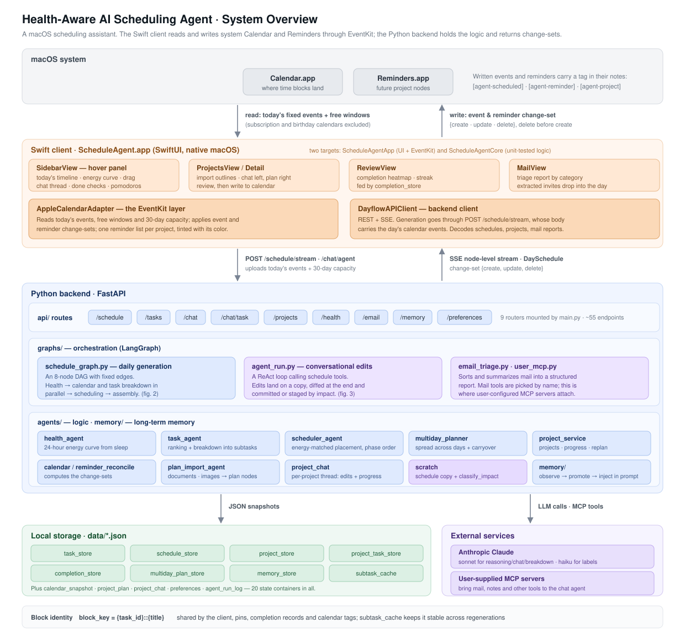
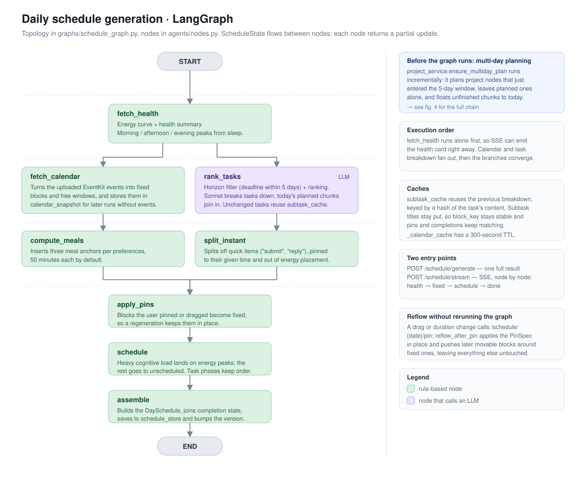
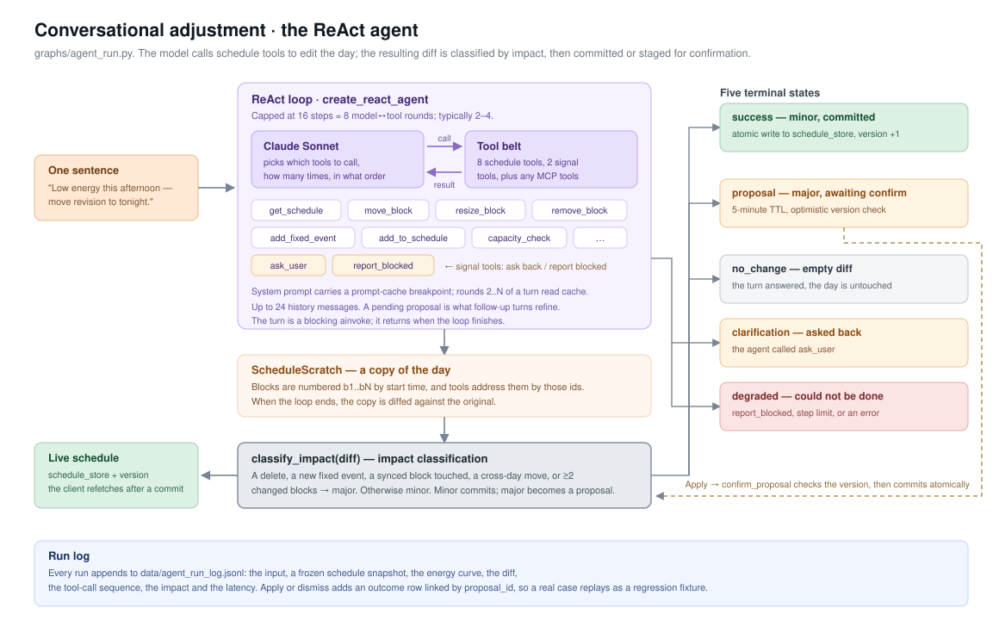
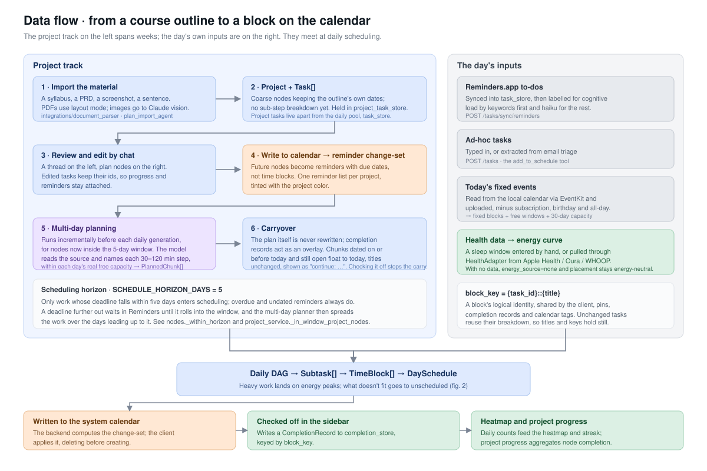

A macOS scheduling assistant. It turns your sleep into an energy curve for the day, folds course outlines, to-dos and fixed calendar events into a planned schedule, and lets you rearrange it in a sentence. The Swift client reads and writes system Calendar and Reminders through EventKit; the Python backend holds the logic and returns change-sets.
Four layers: macOS system apps, the Swift client, the Python backend and local JSON storage. What crosses the
boundary is a change-set {create, update, delete}, which the client applies through EventKit.

An eight-node DAG with fixed edges. Health resolves first so SSE can push immediately; calendar reading and task breakdown run in parallel, then converge into placement and assembly.

The model calls schedule tools to edit the day. Edits land on a copy of the schedule; the resulting diff is classified by impact — minor commits directly, major becomes a proposal awaiting confirmation.

How a course outline becomes a block on the calendar: import → review → reminders → multi-day planning → daily scheduling → written back → completion records → review.
